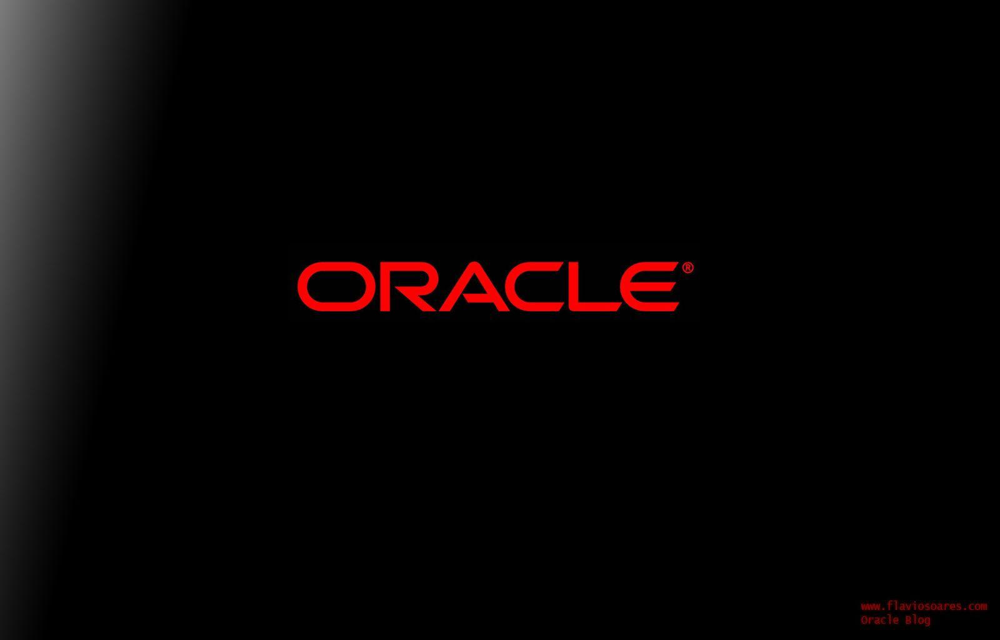
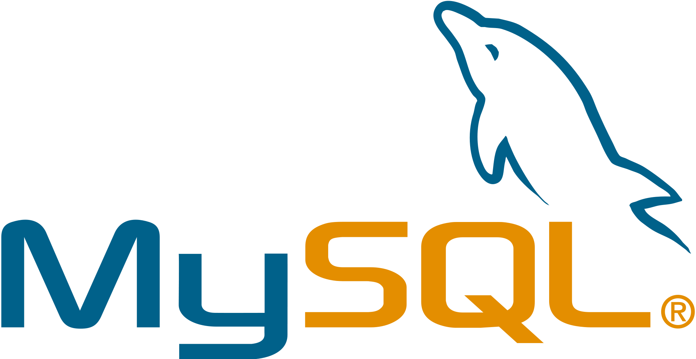

This is referring to a company that offers a unified interface for accessing multiple databases, which can be searched either separately or collectively.
Top 5 Database Platforms
1. Oracle

The Oracle Corporation has developed the most widely-used relational database system (RDBMS) called Oracle Database. This system not only offers RDBMS functionality, but also includes capabilities for Cloud, Document Store, Graph DBMS, Key-value storage, BLOG, and PDF storage. Recently, Oracle has introduced an autonomous feature, which allows the database to be self-managed and intelligent. The Oracle Database stores data in a tabular format with rows and columns. Each column represents the attributes of an entity and each row stores records. Oracle Database is also an object-relational database management system (ORDBMS) which supports object-oriented features like user-defined types, inheritance, and polymorphism. It extends the relational model to allow for the storage of complex business models in a relational database.
2. MySQL

MySQL is a widely used and free database that is open source. It was obtained by Oracle during the Sun Microsystems acquisition in 2009. "Structured Query Language" (SQL) is represented by the "SQL" part of MySQL, and is the most commonly used standardized language for accessing databases. SQL can be entered directly or embedded within code written in another language, or used with a language-specific API that hides the SQL syntax, depending on the programming environment being used.
3. MySQL Server
Microsoft's SQL Server is a highly popular database used by many major companies worldwide. First released in 1989 and written in C and C++, SQL Server has evolved significantly and is now also offered as part of Microsoft's Azure cloud under the name Azure SQL Server. The latest version of SQL Server is SQL Server 2019. Like Oracle and MySQL, SQL Server is a type of relational database management system (RDBMS). One of its editions, Azure SQL Database, is a cloud-based version of Microsoft SQL Server and is available as a platform as a service offering on Microsoft Azure.
4. PostgreSQL
Microsoft's SQL Server is a highly popular database used by many major companies worldwide. First released in 1989 and written in C and C++, SQL Server has evolved significantly and is now also offered as part of Microsoft's Azure cloud under the name Azure SQL Server. The latest version of SQL Server is SQL Server 2019. Like Oracle and MySQL, SQL Server is a type of relational database management system (RDBMS). One of its editions, Azure SQL Database, is a cloud-based version of Microsoft SQL Server and is available as a platform as a service offering on Microsoft Azure.
5. MongoDB
MongoDB is a type of NoSQL database that stores large amounts of data in a document-oriented way. Unlike traditional relational databases that use tables and rows, MongoDB utilizes collections and documents. Documents are composed of key-value pairs, and collections are similar to tables in relational databases. MongoDB was introduced in the mid-2000s.